* Comparison with existing OMRON products.
Building Automation
Industrial Automation
Power Automation & Safety


Bangladesh Distributor
F3SJ Series
Safety Light Curtain

Three versions available to meet your exact safety needs. All versions conform to the latest PLe/Safety Category 4 and SIL3 requirements.
about this Product Family
Related Contents
- Safety Sensors
- Features
- Lineup
- Specifications
- Dimensions
- Application
- Catalog
last update: January 20, 2016
Implementation cost reduction with 1/2* the mounting time: Start with the "EASY type"
The EASY type safety light curtain well is suited for straight forward on/off detection applications.
By carefully selecting the available functions, we have reduced man hours necessary for installation by approximately 1/2 when compared with existing OMRON models.
Reduced installation time means added savings to your project's budget, start with the EASY type.
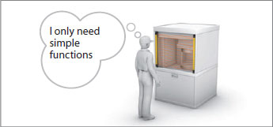
Machine safety first, narrowed down to the simplest functions:
Upon detection of personnel, the machine stops. Simple yet very optimal.
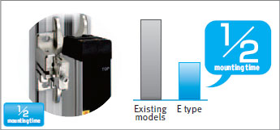
1/2 the mounting time
Fixed response time makes calculation of the safety distance is easier.
Reduced wiring, quick mount brackets and easy-to-view alignment beams all add up to cost savings.
Additionally, with one fixed response time, it is know easier to calculate the safety distance.

Global Support
OMRON will support you through the our global network
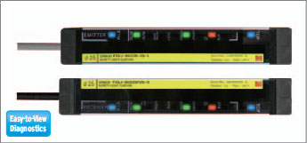
Easy-to-view Diagnostics
These indicators enable you to intuitively know the status and cause of any error.
Allowing you faster installation while reducing machine down time.
Fits any site, equipped with muting functions and series connection: Use the "BASIC type"
In addition to the simple functions inherited from the EASY type, such as global support, easy-to-view indicators, the BASIC type includes series connection and simple muting functions . This enables the BASIC type to satisfy installations that require multiple safety light curtains.
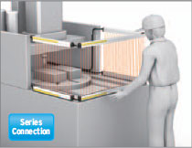
Up to three sets-connected in series
It is possible to connect up to three sets of safety light curtains in series. These sensors can be placed in a U-shaped or L-shaped pattern with a single power line, thus requiring less wiring.
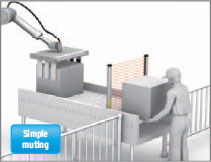
Instant visibility of process trouble during muting
The BASIC type includes a muting function which temporarily disables the safety light curtain when a workpiece passes through. In the event of any trouble occurring, the error can be instantly recognized from the pattern of the LED indicators, allowing for a fast solution.
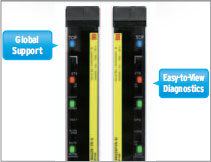
Functions inherited from the EASY type
Simple functions such as universal power voltage specification, easy-to-view diagnostics, a fixed response time have been inherited from the EASY type, As a result, expect reduced work-hours at each stage of use, from design and installation to operation.
Multi-functional for special applications such as finger protection: the "ADVANCED" type
The detection capability supports finger protection through use of 9 mm resolution. The ADVANCED type is equipped with various functions such as blanking, muting and the programing of warning zones. All settings can be done via an easy to use software tool. This Tool simplifies installations that were previously complicated, again our way of reducing cost and increasing productivity.
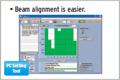
Tool for setting parameters and checking the system status
With the ADVANCED type (F3SJ-A) “SD Manager”, all parameters can be set and the system status can be checked with a personal computer. Complex settings are now simple to configure
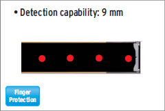
Detection capability supports finger-protection
Even if the distance from the hazard is short, we have prepared a lineup that includes safety light curtains with a detection capability of 14 mm.
Versatile muting function possible
Equipped with partial muting that disables only the beams where a workpiece passes through, and position detection muting that disables the beams while detecting the position of a machine or robot.
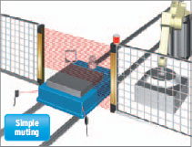
Partial muting
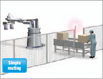
Position detection muting
The blanking function disables specific beams of the Safety Light Curtain
If a part of the mechanical equipment is within the detection zone of the Safety Light Curtain, the relevant beams can be disabled. This is possible not only with non-moving parts but also with moving parts.
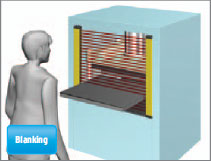
Fixed blanking
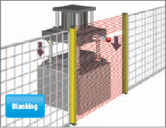
Floating blanking
Setting up a warning zone to prevent unnecessary stoppage
Under normal use, if an intrusion occurs in the safety zone, the machine will stop immediately. However, use of a warning zone will only notify the operator that an intrusion has occurred. This can be used to prevent carelessness resulting in machine stoppage on the part of the operator.
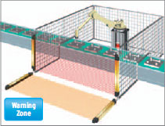
Dividing the zone between series-connected sensors
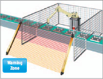
A single sensor zone can also be divided
Providing ease-of-use and ease-of-mounting through ingenuity
In pursuit of fast-easy mountable brackets *
* Sold separately
[Patent Pending]
OMRON has developed "quick mount" brackets which speed mounting to aluminum framing and reduce mounting time in half,when compared with existing models.<br/>This unique design allows for smooth horizontal movement, beam alignment is easy.
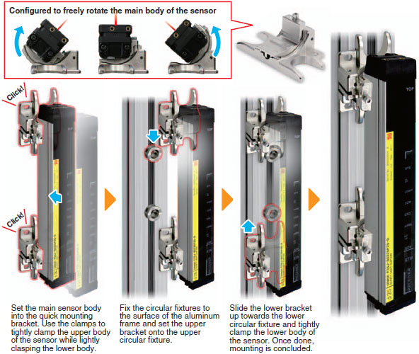
Top and bottom blue LEDs enabling beam alignment
Simple positional alignment can be done using the blue LEDs at the top (TOP) and bottom (BTM) of the emitter and receiver. With the blue LEDs ON, you can see at a glance that the beams' positions are correctly aligned.
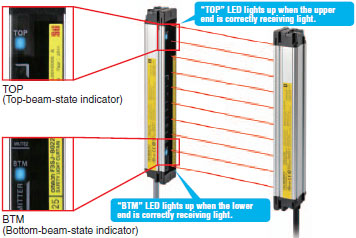
Towards a more usable and installable safety light curtain.
Laser pointer used to easily align the beams *
* Sold separately
Use of the laser pointer allows simple alignment of the beams especially across long distances.
This saves approximately 60% of installation time.
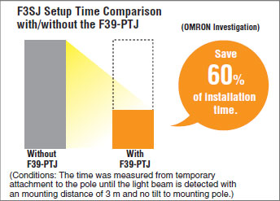
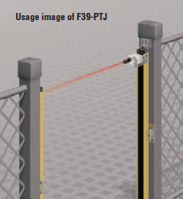
Easy-to-understand diagnostics
Light curtain status can be immediately determined as the LED will light to indicate the status or possible error.
Communication error (EASY/BASIC type)
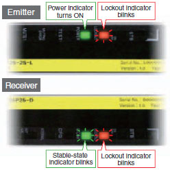
Input error (BASIC type)
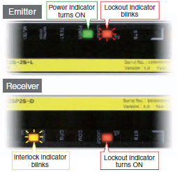
Industry First! Error indication while muting is in progress.
The days of searching through user manuals to find the cause of certain muting errors are long gone. Now these errors and their causes can be well understood.
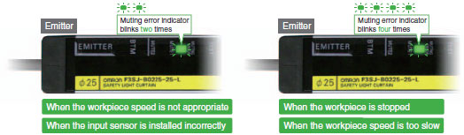
Providing multiple functions to cope with the various safety requirements
[NEW] "Simple wiring connector" used to reduce wiring work by more than 50%*
The connector can be used to easily connect between an emitter and a receiver, reducing the required wiring time by more than 50%.
Less wiring also reduces the width of the terminal block, saving valuable space in the control panel.
Note: The simple wiring connector can be used for F3SJ-A/B in auto reset mode only, not for F3SJ-E.
* Comparison with existing OMRON products.
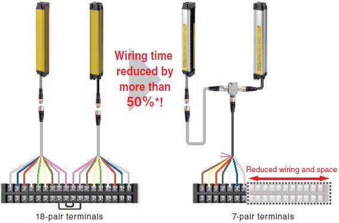
Tool for setting parameters and checking the system status
"SD Manager" PC Setting Support Software (For F3SJ-A)
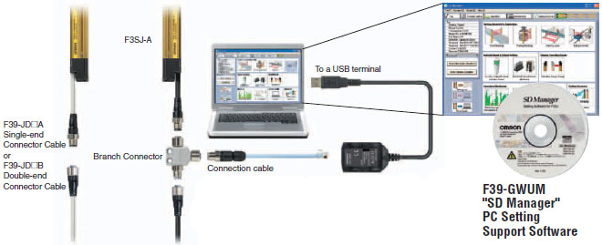
All parameters can be set and the system status can be checked with a personal computer. In addition to making it easy to monitor the beam alignment, the ambient incident light intensity can be displayed in bar graph form for an easy check of the system status.
The "SD Manager" PC Setting Support Software helps reduce the time required for installing and troubleshooting the Safety Light Curtain.
Beam alignment is easier.
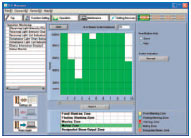
The incident light level can be displayed in a bar graph for each beam.
The ambient incident light intensity can be checked.
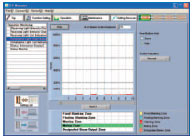
The incident light level when the light emission of the Safety Light Curtain is stopped is displayed in a bar graph.
The error log can be displayed.
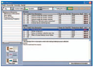
The cause of the errors and countermeasures are both displayed.
Added the ENVIRONMENT RESISTANT type (F3SJ-B[][][][]P25-02TS) to the E3SJ series.
The coolant-resistant structure supports use in a severe work environment
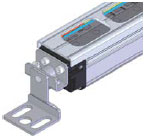
Protects the sensor unit from direct exposure to the coolant.
The aluminum frame and transparent plate protect the sensor unit from direct exposure to the coolant. The cover protects the sensor's detection surface from collision with a workpiece, etc.
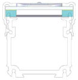
Protects the sensor from entry of the coolant that runs around the sensor.
The coolant-resistant H-NBR sponge used inside the cover protects the sensor from entry of the coolant that runs around the sensor.
Note: The sensor may be affected depending on the type of the cutting oil. Check the oil type before use.
Achieving muting function without a controller
The muting function temporarily disables the light curtain when an object must pass through the detection zone, such as when supplying a workpiece to your equipment. In the past, this function required a dedicated muting controller, but now it is built into the F3SJ. To use the muting function, purchase the Muting Key Cap (for F3SJ-B: F39-CN10 and for F3SJ-A: F39-CN6) (sold separately). The muting function is enabled simply by replacing the Unit's cap with this Key Cap. In addition, a muting sensor that determines the muting timing, as well as a muting lamp that notices the muting status to other operators, should be connected to the F3SJ.
The muting time for the F3SJ-A can be set via the software tool.
Use example of a muting key cap for F3SJ-A
[Built-in muting function]
No controller required. Simply attach the Key Cap (sold separately) to the sensor.
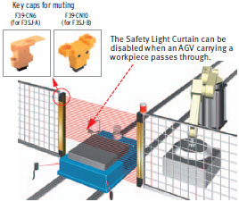
Equipped with two muting functions
With F3SJ-A, the muting function temporarily disables the Safety Light Curtain when an object must pass through the detection zone, such as when supplying a workpiece to your equipment. "Partial muting," which further heightens the level of safety, and "position detection muting," which allows muting when the safety status can be determined by the position of a machine (such as a robot), have been newly added to the muting function.
Partial muting
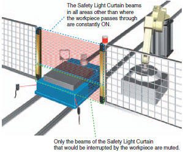
Partial muting raises safety by muting only the beams of the Safety Light Curtain in the area where the workpiece passes through, while preventing muting in all other areas.
Position detection muting
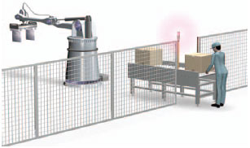
This is used in applications where the workpiece is set in position each time by an operator, and then a turntable or positioning robot moves the workpiece to the area where the work is done. A limit switch or other means is used to detect when the robot is in a safe position, and muting is then applied.
last update: January 20, 2016